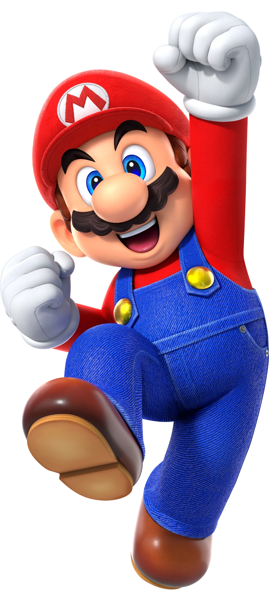

Mario

- Encanador corpulento originalmente vindo de Brooklyn, Nova York.
- Atualmente é residente do Reino dos Cogumelos.
- Tem um irmão gêmeo mais novo e mais alto, o Luigi.
- Como residente do Reino dos Cogumelos, possui a missão contínua de resgatar a princesa Peach das garras do vilão Bowser, o qual é completamente apaixonado por ela.
- Porém, também passa por várias outras aventuras junto com sua turma de amigos e a gangue de vilões do Bowser:
- Mario Kart: Série de corridas que acontecem em vários lugares dentro e fora do Reino dos Cogumelos.
- Mario Party: Festas e eventos recorrentes no Reino dos Cogumelos nos quais Mario e seus amigos competem um contra o outro para ganharem o título oficial de Super Star ou Super Estrela.
- Série de esportes: Mario e seus amigos participam de vários torneios e modalidades esportivas, como basquete, tênis, golfe, baseball e futebol.
- Série das Olimpíadas de Inverno e de Verão: Nessa série, a turma do Mario se junta com a turma do Sonic para competirem em vários outros esportes nos Jogos Olímpicos de Inverno e de Verão.
- Super Smash Bros.: A turma do Mario se junta com várias outras turmas de videogame participando de lutas extremas, onde cada lutador deve tirar seus adversários de fora da arena de luta e conseguir ser o único a continuar na arena para ganhar.
- Mario & Luigi: Partners in Time:
Nessa aventura, um cientista renomado e também amigo de Mario e Luigi, o professor Ed. Gadd., constrói uma máquina de voltar no tempo e quando é inaugurada,
a princesa Peach consegue a honra de ser a primeira pessoa a testá-la,
porém todos começam a ficar preocupados com a demora dela, então Mario e Luigi conseguem achar um buraco onde conseguem voltar no tempo e resgatar a princesa,
porém acabam percebendo que a luta para conseguirem trazê-la de volta vai ser muito grande, com muitas voltas pro passado e pro presente, incluindo um reencontro com seus eus do passado.